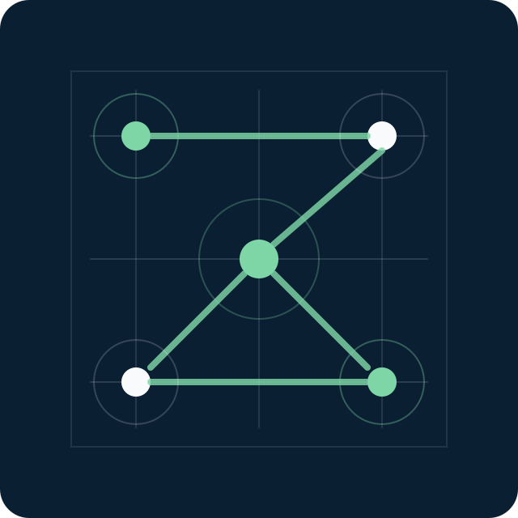

Portfolio IT · Redes · Operaciones
Coordinación de infraestructuras de red con foco en estabilidad, seguridad y mejora continua.
Perfil técnico especializado en gestión de equipos, operación de redes corporativas, resolución de incidencias críticas y despliegue de soluciones escalables para entornos empresariales.

Estado operativo
99.95%
Disponibilidad anual de servicios críticos
Sobre mí
Perfil orientado a operación, liderazgo técnico y servicio.
Skills
Capacidades técnicas
Experiencia
Responsabilidades principales
Proyectos
Casos destacados
Selección de iniciativas técnicas, operativas y de mejora continua. Puedes añadir tantos proyectos como necesites desde content.json.
Certificaciones
Conocimiento certificado
Formación
Base académica y técnica
CV
Currículum orientado a roles de coordinación IT, redes e infraestructura.
Contacto